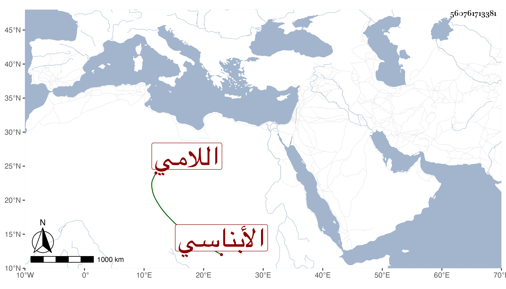

0902Sakhawi.DawLamic.ITO20230111-ara1.EIS1600.560761713381
Biography ID: 560761713381
113
علي بن مصباح بن محمد بن أبي الحسن نور الدين بن ضياء الدين اللامي والد الشمس محمد وأم الزين عبد الرحيم الأبناسي . ذكره شيخنا في إنبائه وقال : كان أحد الفضلاء في الفقه خيرا كثير الإطعام يتعانى في الزراعة وتنزل في زاويته بمنية الشيرج مع تردده في القرى . مات في ثالث عشر شوال سنة ثلاث عشرة رحمه الله وإيانا .
